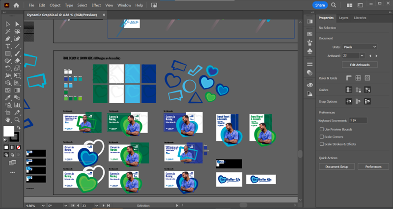
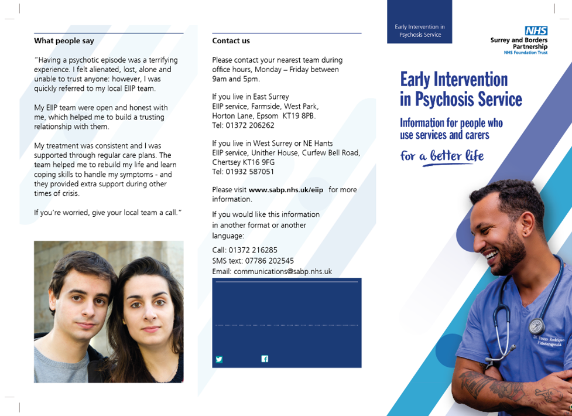

SABP ReBranding

Project Outline Statement
Background
The Surrey and Borders Partnership NHS Trust (SABP) Comms Team are looking for a rebrand to be produced that “dresses up and down” across all touchpoints of Surrey & Borders Partnership (inc. letterheads, social media material, annual reports, roller banners). This graphical device will support the material on both print and digital platforms and needs to be accessible for a wide range of users (NHS patients and staff). Designers have a role of producing mock-ups which will then be handed over to comms team members once a final decision has been made on the 5th September 2023. Following the submission of a design proposal from an external design agency, the Trust’s Communications team are assigning the same task to roles and design expertise in-house.
Designers to develop a new graphical element that will work across various touchpoints. The communications team have also created a Recruitment Campaign. The designs produced in this can be used as inspiration as this displays their design direction going forward. It is preferable that each designer produces a new graphical device and displays this within two example mock-ups to show its versatility (e.g., Annual report cover, patient facing poster). The design team will be required to pitch their proposals to the communications team on the 3rd of September.
Quote from Director of Comms -
"The CEO is looking for something quite subtle, a graphical device that ‘dresses up and down’, i.e. can look very corporate blazoned across an Annual Report cover and can be part of the wallpaper when we want a relaxed or youthful or upbeat look and feel. ‘For a better life’ (examples of this in the recruitment campaign material) should be prominent. It can be in/with the graphical device or separate. He wants it to work with the ‘excellent work’ we did on the recruitment strategy, and we should be easily able to apply it to [at least] the front of Our Strategy.”
Date & Duration:
- January 2023 - June 2023 (Development & Build)
Research Artifacts
Trust Values & Priorities
Values:
- Treat people well
- Involve not ignore
- Create respectful places
- Be honest, open and accountable
Strategic Priorities
- Providing high-quality care
- Have a valued and inclusive workforce
- Stengthening involvement with people, carers, and families
- Making the best use of resources
- Working in partnership
- Be a learning organisation
Trust Strapline - "For a better life"
The Trust’s strapline ‘For a better life.’ is used in the recruitment campaign and would need to feature in any new branding in the same font (Franklin Gothic Extra Condensed). The designs need to reflect this strapline and ethos across all touchpoints. The design team were asked to make sure this was a central consideration to inspire design choices with the re-brand.
Project Goals & Challenges
Pain Points
- Extremely quick turnaround, timescale of 3 weeks to research, design and present this proposal
- Limited contact with key stakeholders including Head/Director of Communications due to busy work period
- Reduced opportunity to be iterative with design work. Only one chance to review initial designs with stakeholders and to apply changes. As a result, this put pressure on making sure the initial designs were as well informed as possible.
Goals
- Knowledge sharing - we're taking on more important design principles and thinking about accessibility within our designs for SystmOne. This opportunity to knowledge share with the Communications Team can benefit the relationship between the Design Team and Communications team, opening a channel for potential work in the future.
- To benefit the whole user experience not just for staff in the patient record but for patient leaflets and other touchpoints that patients will directly interact with.
- Produce a brand identity that supports the values of the Trust and is flexible across different mediums.
- Support and organise a multi-disciplinary team to deliver designs with meaning that expresses the values of the Trust
- Provide a cost benefit to the Trust through completing this work with in-house skills and resources.
My Role & Contribution
The proposal for this design work developed following a period of consultation I had personally organised with the communications team to discuss accessibility on the trust website and colour scheme. After receiving the proposal to make a new brand identity, I drew up a business case file to explain the details, project background and approach to the Head of Design & Solutions. Once this was approved, I was able to assemble a team of UX Designers/UX Researchers with previous branding/graphic design skills to complete this project. I then proceeded to organise tasks, due dates and follow up meetings to move the project forward efficiently.
The multi disciplinary team I assembled included a individuals with a range of different experience including graphic design, branding design that really supported the graphical work created for this project. Creating a team of creative individuals who work within the trust also provided an excellent chance to strongly reflect the trust values within our work. The team members had a difference in the time they had worked within the Trust. I thought it was key to get a wide range of experience, as a designer who has started recently within the trust could present viewpoints on the brand that are different to an individual who has worked with the trust for a number of years. Having this mix in viewpoints really helped develop our product into something that relates to a wider view of the Trust.
Key Stakeholders
- Director of Communications
- Head of Communications
- Senior Digital Marketing and Communications Officers
- UX Designers and Researchers with interests and skills in branding development
- Surrey and Borders NHS Trust staff members
Alpha Phase
Reflective Resources
SABP Past Branding - The previous brand material used by Surrey and Borders Partnership featured chevrons and a sharp colour palette. The feeling given by the communications team was that the chevrons were too dominant and distracting on trust material. As a result, this restricts the brand and restricts the brand from being adaptive. At the time the Trust was also approaching the release of a new 5 year plan, the chief executive wanted to transform the branding to reflect this change in direction for the organisation.
The key takeaways for the design team to move forward with focused around making the brand adaptive and transformative. It also needed to portray a softer approach that would be complimentary to content rather than overpowering.
SABP Brand Guide - The trust had a range of resources useful to us including a brand guide. Reflecting on the brand guide helped us understand how design elements had been created with the purpose of usage. We noted that the designs we make need to be easy to replicate. Many staff members within the trust won't have the skills or knowledge of how to use the design elements to meet the brand rules. Making the design simple to replicate makes it easier for staff to tap into the look, feel and ethos we are trying to develop within the new brand identity.

Marketing Material to Match
The communications team also presented the design team with some examples of a recent marketing campaign that had been released. This provided us with a great example of the expectations and the use of visual language we needed to replicate/support. Below shows the example of the use language and colour and how this worked to create a visual experience.
External Agency Designs
Prior to the involvement of my team within this project, the communications team briefly worked with an external design agency to produce some initial mockups. The Trust were left dissatisfied with what was produced as they felt the designs didn't properly reflect the values of the trust. The work produced by the agency acted as a great reference for us. We felt the colours were flat and uncaptivating and the graphical elements failed to present a more transformative experience that was different to the previous brand design using 'chevrons'. Our goal was to go in a different more exciting different that reflected the new 5 year plan for the trust.
Project Timeline Planning
Staff Commitment - Designers worked 4-6 hours a week (including 1-2 meetings) over the course of the project timeline to produce 1 or 2 examples of example mock-ups (roll up banner, social media post).
Proposed Project Timeline: The timeline below was developed to meet the strict deadlines provided by the communications team.
Accessibility Considerations
Accessibility was a key topic within this project. As a team we wanted to make sure our designs were visually accessible to all viewers. The NHS is a nationwide service to all citizens, therefore we need to make sure that all are able to effectively understand the information shown on the designs. We could do this in a number of different ways...
- Meeting the required national accessibility score
- Making sure information is legible. The NHS is a public service, users and information need to be considered as the most important element of any marketing material, documents created by the trust need to be easy to understand.
- Colours need to work together efficiently and rules need to be considered and applied to a brand guide so they can be built and used correctly in the future
Design Option #1
Option 1 displays the first design option presented to the communications team. I created this example myself alongside the suggestions and support of my team.
Development
The images below display a view of the design assets and how the artboards were constructed to present a range of different combinations to present as potential solutions.
During the design period of the project a range of different design software was used. This included Adobe Illustrator for the creation of graphical assets and Adobe Photoshop for image manipulation and preparation. I have worked with Adobe products consistently for 7 years, as a result I was able to produce industry standard designs swiftly to meet the short deadline of this project.
Mockups
Leaflet:
Social Media Marketing Green & Blue: These options center around a primary graphical element, a dynamic heart shape. The heart is used to represent the service users that Surrey and Borders provides care for everyday. The heart sits behind the primary image as a contrasting element, with information sitting around this point.
Social Media Marketing Quote: The marketing quote design shows an alternative option made specifically for displaying service user/staff quotes. The quote is supported by a visual quotation box that replaces the dynamic heart shape. The colour contrast in all of these designs were carefully considered to make sure the 'AA' level was achieved. There are a variety of colours that intertwine so it is easy for contrasts to become busy and overwhelming on the eye.
Annual Report:
Letterhead: The letterhead design again uses the graphical heart as a central point. It works alongside the "for a better life" tagline to produce a more visual experience that interconnects with the graphical material made for the annual reports, marketing material.
Design Option #2
Enter Description of what was considered in Design Option 2. Note this was made by another designer within the team.
Annual Report: Add description of the annual report
Social Media Marketing: Add description of the annual report
Beta Phase
Final Design Proposal
The graphical devices of circles and streaks used within Idea #2 have their own unique meaning. The circles represent our service users, playing on the term "Circle of Life". Circles often represent balance, since they contain two halves joined together—the yin-yang signifying duality and harmony. The phrase "Circle of Life" can be often used to describe the full spectrum of healthcare services provided, from birth to end-of-life care. It signifies the NHS's commitment to delivering comprehensive and universal healthcare services that address the needs of individuals at every stage of their lives, ensuring access to quality care regardless of age, background, or medical condition. The "circle of life" concept underscores the NHS's mission to support the health and well-being of the entire population throughout their lifetimes. This design inspiration alludes to the marketing phrase coined by the Communications team “for a better life”.
Details of the design development:
- Point 1
- Point 2
- Point 3
What inspiration did we take for this, who did I contact to get more information on development in such a short time frame? How did I work with the Communications team to develop this design from the initial proposals? What did we do to improve upon this?
Mockups
Leaflet: Add Description
Social Media Marketing: Add Description
Letterhead: Add Description
Outcome & Handover
Design proposal has been accepted by the Chief Executive Office (see feedback below). Plans are being developed to implement the design across the Trust (digital and print touchpoints). The next steps will be to produce a brand guide to outline the usage details for the new designs. This will include, accessibility rules, use of language, use of colours, correct construction of the design, breakdown of design application to different touchpoints. I will be continuing to work alongside the Trust’s communications team in the future to support the embedding of the new branding created.
How did we measure success?
- Point 1
- Point 2
- Point 3
Feedback from Clientele
SABP - Director of Communications - “I just wanted to praise your UX team for doing some really excellent work, at speed, on our brand. Their creativity, underpinned by expertise in accessibility issues, blew us away. They had also clearly listened really well to the brief, which is a rare skill. The resulting work was worthy of an expensive design agency. I don’t often take the time to write emails congratulating teams, but this was hugely deserved. Please let them know just how much I appreciate their efforts. I plan to nominate them for a Staff Award.”
SABP - Head of Communications - “I wanted to give you an update on the new branding you have created for the Trust which Marcel has now shared with Graham Wareham (CEO) and Helen Rostill (Chief Executive Director of Therapies). They were both very impressed with your work and very happy to sign off on the design.”
What I learned from this project
What I learned
- Organising a team to produce work in a quick turnaround and to communicate efficiently to understand who is performing what role.
- Experience in presenting a design proposal, covering accessibility, meaning behind designs, their purpose and to align the designs to achieve the aspirations of the client.
- Keeping design proposals brief and to the point, preventing overcomplication and misunderstanding.
- How to provide designers with inspiration to apply themselves within a project and to use their creativity and imagination.
What I can do to improve
- If more time was available for this work, I would have explored the values of the Trust more thoroughly. This would help build an understanding of the experience of a service user and a staff member and how this can be reflected and represented in the branding.
- To take the opportunity to use research resources, gather a statistical understanding of how different design options produce different experiences. Apply statistical analysis to design reasoning, making sure the designs have credible backing and reasoning behind decision making.